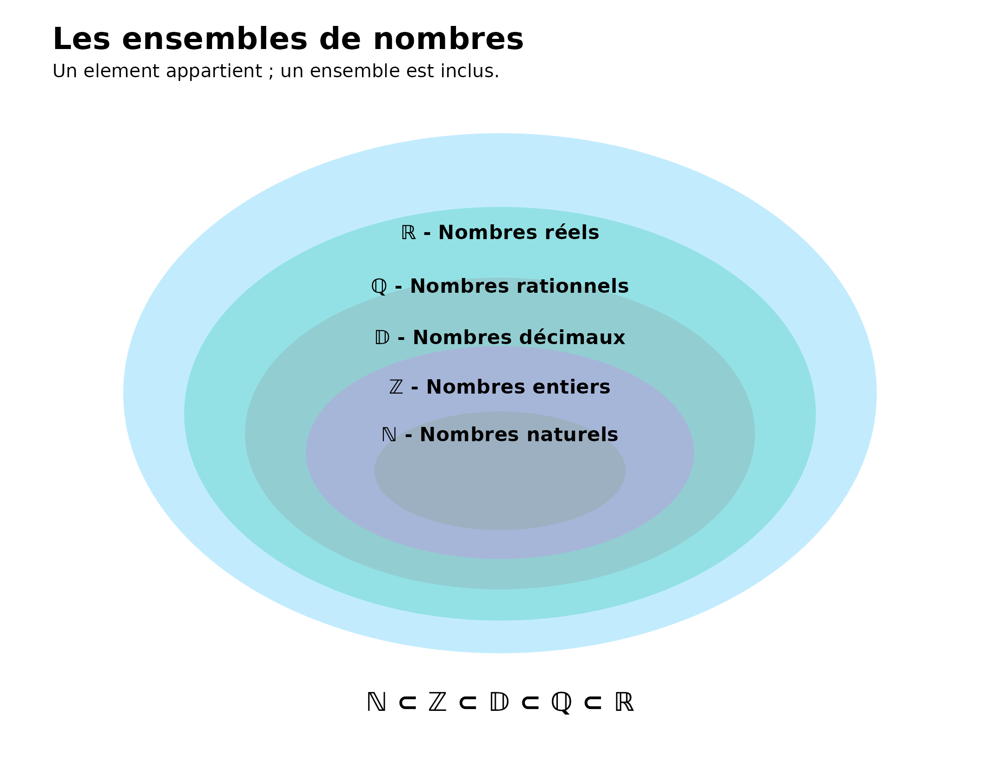

Fiche — Les ensembles de nombres
fiche-ensembles-nombres.RmdAvant de calculer, il faut savoir de quels nombres on parle. Un ensemble est simplement une collection d’objets ; ici, les objets sont des nombres.

La chaine a retenir est :
\mathbb{N} \subset \mathbb{Z} \subset \mathbb{D} \subset \mathbb{Q} \subset \mathbb{R}.
Lire les cinq ensembles
| Symbole | Ensemble | En clair | Exemple |
|---|---|---|---|
| ℕ | Nombres naturels | Entiers positifs ou nuls. | 3 |
| ℤ | Nombres entiers | Nombres naturels, leurs opposés et zéro. | -2 |
| 𝔻 | Nombres décimaux | Nombres ayant une écriture décimale finie. | 0,25 |
| ℚ | Nombres rationnels | Nombres pouvant s’écrire comme quotient de deux entiers avec un dénominateur non nul. | 2/3 |
| ℝ | Nombres réels | Tous les nombres repérables sur une droite graduée. | √2 |
Appartenir n’est pas etre inclus
Un nombre est un element. Un ensemble est une collection d’elements.
3 \in \mathbb{N}
se lit « 3 appartient a l’ensemble des naturels ».
\mathbb{N} \subset \mathbb{Z}
se lit « l’ensemble des naturels est inclus dans l’ensemble des entiers ».
A retenir : un element appartient ; un ensemble est inclus.
Cinq rappels, comme cinq fruits et legumes
La fiche n’est pas seulement faite pour etre lue. eduschool sait aussi fabriquer un petit entrainement auto-corrigeable a partir de la meme notion :
q = exercices_ensembles_nombres(seed = 2026)
produire_quiz(
q,
titre = "Mes 5 rappels sur les ensembles"
)Les cinq questions reviennent sur le classement d’un nombre dans le
plus petit ensemble usuel et sur la difference entre \in et
\subset.